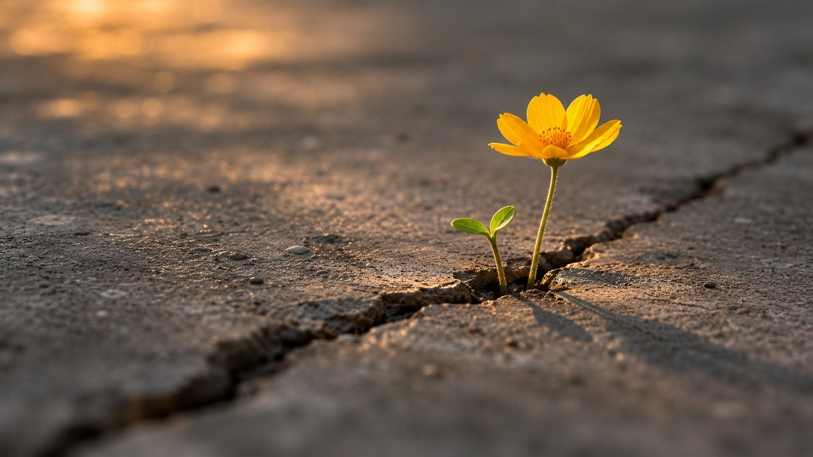

Life Again
After dinner, guests leave through a second city — a smaller hall, like the first, but full of flowers, vines and trees, in warm light. In this city a photo booth is waiting for a group souvenir photo; guests then collect their gifts and leave. It is the last image of the night they take home.
The second city
Guests leave through a second, smaller city — the same streets, now full of flowers, vines and trees. A photo booth takes a group souvenir photo; then everyone collects their gift — a small potted plant, a sign of the fresh breath — and heads home.
Every space of Life Again, as the guests will see it.
How Life Again is built
Out through the second city
After dinner, guests leave through the second city: a smaller hall built like the first, but full of flowers, vines on the balconies, trees in planters and warm string lights from the start — the city after the fresh breath. It is a separate hall, so nothing in the first street has to change during the night. In the middle of this city a photo booth, set against the flower-filled street, takes a group souvenir photo of each party, printed on the spot. By the exit doors every guest collects a gift and heads home: a small potted plant — a sign of the fresh breath.